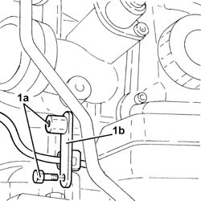
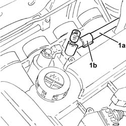
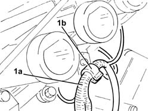
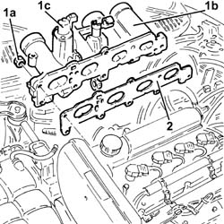
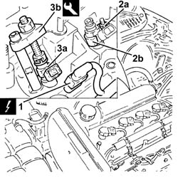
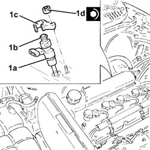
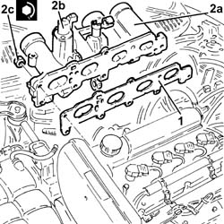

1056F68 INJECTOR SET - R.R. with fuel manifold pipe removed - Includes Replacement. of gaskets
- Path
- Procedures > 10 ENGINE UNIT > 1056 PETROL INJECTION SYSTEM > 1056F DIRECT PETROL INJECTION SYSTEM > 1056F68 INJECTOR SET - R.R. with fuel manifold pipe removed - Includes Replacement. of gaskets
- Kind
- repair procedure (removal / refitting; the operation number is the code)
- Applies to
- engines: 2.0 JTS; all production periods
- Interactive page
- https://sloeber94.github.io/elrnDB-aGt/en/#/2923162
Applies to: engines: 2.0 JTS; all production periods
 Removing
Removing
 Refitting
Refitting1. Undo the bolts (1a) and remove the bracket (1b) after releasing the electrical wiring from the band.

Applies to: engines: 2.0 JTS; all production periods
1. Release the fuel supply pipe to the high-pressure pump (1a) from the attachment (1b) on the inlet manifold.

Applies to: engines: 2.0 JTS; all production periods
1. Release the wiring (1a) from the band (1b) on the inlet manifold.

Applies to: engines: 2.0 JTS; all production periods
1. Undo the nuts (1a) and remove the inlet manifold (1b) complete with timing variator electromagnet (1c).
2. Remove the inlet manifold gasket.

Applies to: engines: 2.0 JTS; all production periods
1. Disconnect the electrical connections from the injectors.
 | Name | Connector |
|---|---|---|
1 | Injector |
2. Undo the nuts (2s) and remove the brackets (2b).
3. Remove the injectors (3a) complete with seals using the tool (3b).
 | Name | Country |
|---|---|---|
3b | Extractor | 1.870.897.200 |

Applies to: engines: 2.0 JTS; all production periods
Refitting
Removing1. Refit the fuel injectors (1a) complete with new seals (1b) and brackets (1c), then tighten their nuts (1d) to the specified torque.
 | Fastening | Component | Ø | Value (daNm) |
|---|---|---|---|---|
1d | Self-locking nut | INJECTORS | M6 | (Intake manifold side) 0.5 ÷ 0.6 |
Connect the electrical connections to the injectors.

Applies to: engines: 2.0 JTS; all production periods
1. Refit the inlet manifold gasket.
2. Refit the inlet manifold (2a) complete with timing variator electromagnet (2b) and tighten the nuts (2c) to the specified torque.
| Fastening | Component | Ø | Value (daNm) |
|---|---|---|---|---|
2c | Nut | INLET MANIFOLD | M8 | (Cylinder head side) 2.3 ÷ 2.8 |

Applies to: engines: 2.0 JTS; all production periods
Secure the wiring to the band located under the inlet manifold.
Secure the fuel delivery pipe to the high-pressure pump to the attachment on the inlet manifold.
Refit the bracket back in its housing and secure it using the bolts, then secure the electrical wiring to the band.